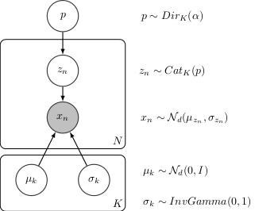

Probabilistic Model Zoo¶
Bayesian Linear Regression¶
# Shape = [1,d]
w = Normal(0, 1, dim=d)
# Shape = [1,1]
w0 = Normal(0, 1)
with inf.replicate(size = N):
# Shape = [N,d]
x = Normal(0,1, dim=d, observed = true)
# Shape = [1,1] + [N,d]@[d,1] = [1,1] + [N,1] = [N,1] (by broadcasting)
y = Normal(w0 + tf.matmul(x,w, transpose_b = true ), 1, observed = true)
model = ProbModel(vars = [w0,w,x,y])
data = model.sample(size=N)
log_prob = model.log_prob(sample)
model.compile(infMethod = 'KLqp')
model.fit(data)
print(probmodel.posterior([w0,w]))
Zero Inflated Linear Regression¶
# Shape = [1,d]
w = Normal(0, 1, dim=d)
# Shape = [1,1]
w0 = Normal(0, 1)
# Shape = [1,1]
p = Beta(1,1)
with inf.replicate(size = N):
# Shape [N,d]
x = Normal(0,1000, dim=d, observed = true)
# Shape [N,1]
h = Binomial(p)
# Shape [1,1] + [N,d]@[d,1] = [1,1] + [N,1] = [N,1] (by broadcasting)
y0 = Normal(w0 + inf.matmul(x,w, transpose_b = true ), 1),
# Shape [N,1]
y1 = Delta(0.0)
# Shape [N,1]*[N,1] + [N,1]*[N,1] = [N,1]
y = Deterministic(h*y0 + (1-h)*y1, observed = true)
model = ProbModel(vars = [w0,w,p,x,h,y0,y1,y])
data = model.sample(size=N)
log_prob = model.log_prob(sample)
model.compile(infMethod = 'KLqp')
model.fit(data)
print(probmodel.posterior([w0,w]))
Bayesian Logistic Regression¶
# Shape = [1,d]
w = Normal(0, 1, dim=d)
# Shape = [1,1]
w0 = Normal(0, 1)
with inf.replicate(size = N):
# Shape = [N,d]
x = Normal(0,1, dim=d, observed = true)
# Shape = [1,1] + [N,d]@[d,1] = [1,1] + [N,1] = [N,1] (by broadcasting)
y = Binomial(logits = w0 + tf.matmul(x,w, transpose_b = true), observed = true)
model = ProbModel(vars = [w0,w,x,y])
data = model.sample(size=N)
log_prob = model.log_prob(sample)
model.compile(infMethod = 'KLqp')
model.fit(data)
print(probmodel.posterior([w0,w]))
Bayesian Multinomial Logistic Regression¶
# Number of classes
K=10
with inf.replicate(size = K):
# Shape = [K,d]
w = Normal(0, 1, dim=d)
# Shape = [K,1]
w0 = Normal(0, 1])
with inf.replicate(size = N):
# Shape = [N,d]
x = Normal(0,1, dim=d, observed = true)
# Shape = [1,K] + [N,d]@[d,K] = [1,K] + [N,K] = [N,K] (by broadcasting)
y = Multinmial(logits = tf.transpose(w0) + tf.matmul(x,w, transpose_b = true), observed = true)
model = ProbModel(vars = [w0,w,x,y])
data = model.sample(size=N)
log_prob = model.log_prob(sample)
model.compile(infMethod = 'KLqp')
model.fit(data)
print(probmodel.posterior([w0,w]))
Mixture of Gaussians¶

Mixture of Gaussians
Version A
d=3
K=10
N=1000
#Prior
with inf.replicate(size = K):
#Shape [K,d]
mu = Normal(loc = 0, scale =1, dim=d)
#Shape [K,d]
sigma = InverseGamma(concentration = 1, rate = 1, dim=d)
# Shape [1,K]
p = Dirichlet(np.ones(K))
#Data Model
with inf.replicate(size = N):
# Shape [N,1]
z_n = Multinomial(probs = p)
# Shape [N,d]
x_n = Normal(loc = tf.gather(mu,z_n), scale = tf.gather(sigma,z_n), observed = true)
model = ProbModel(vars = [p,mu,sigma,z_n, x_n])
data = model.sample(size=N)
log_prob = model.log_prob(sample)
model.compile(infMethod = 'KLqp')
model.fit(data)
print(probmodel.posterior([mu,sigma]))
Version B
d=3
K=10
N=1000
#Prior
mu = Normal(loc = 0, scale =1, shape = [K,d])
sigma = InverseGamma(concentration = 1, rate = 1, shape = [K,d])
# Shape [1,K]
p = Dirichlet(np.ones(K))
#Data Model
z_n = Multinomial(probs = p, shape = [N,1])
# Shape [N,d]
x_n = Normal(loc = tf.gather(mu,z_n), scale = tf.gather(sigma,z_n), observed = true)
probmodel = ProbModel(vars = [p,mu,sigma,z_n, x_n])
data = probmodel.sample(size=N)
log_prob = probmodel.log_prob(sample)
probmodel.compile(infMethod = 'KLqp')
probmodel.fit(data)
print(probmodel.posterior([mu,sigma]))
Linear Factor Model (PCA)¶

Linear Factor Model
K = 5
d = 10
N=200
with inf.replicate(size = K)
# Shape [K,d]
mu = Normal(0,1, dim = d)
# Shape [1,d]
mu0 = Normal(0,1, dim = d)
sigma = 1.0
with inf.replicate(size = N):
# Shape [N,K]
w_n = Normal(0,1, dim = K)
# inf.matmul(w_n,mu) has shape [N,K] x [K,d] = [N,d] by broadcasting mu.
# Shape [1,d] + [N,d] = [N,d] by broadcasting mu0
x = Normal(mu0 + inf.matmul(w,mu), sigma, observed = true)
probmodel = ProbModel([mu,mu0,w_n,x])
data = probmodel.sample(size=N)
log_prob = probmodel.log_prob(sample)
probmodel.compile(infMethod = 'KLqp')
probmodel.fit(data)
print(probmodel.posterior([mu,mu0]))
PCA with ARD Prior (PCA)¶
K = 5
d = 10
N=200
with inf.replicate(size = K)
# Shape [K,d]
alpha = InverseGamma(1,1, dim = d)
# Shape [K,d]
mu = Normal(0,1, dim = d)
# Shape [1,d]
mu0 = Normal(0,1, dim = d)
# Shape [1,1]
sigma = InverseGamma(1,1, dim = 1)
with inf.replicate(size = N):
# Shape [N,K]
w_n = Normal(0,1, dim = K)
# inf.matmul(w_n,mu) has shape [N,K] x [K,d] = [N,d] by broadcasting mu.
# Shape [1,d] + [N,d] = [N,d] by broadcasting mu0
x = Normal(mu0 + inf.matmul(w,mu), sigma, observed = true)
probmodel = ProbModel([alpha,mu,mu0,sigma,w_n,x])
data = probmodel.sample(size=N)
log_prob = probmodel.log_prob(sample)
probmodel.compile(infMethod = 'KLqp')
probmodel.fit(data)
print(probmodel.posterior([alpha,mu,mu0,sigma]))
Mixed Membership Model¶
Mixed Membership Model
K = 5
d = 10
N=200
M=50
with inf.replicate(size = K)
#Shape = [K,d]
mu = Normal(0,1, dim = d)
#Shape = [K,d]
sigma = InverseGamma(1,1, dim = d)
with inf.replicate(size = N):
#Shape = [N,K]
theta_n = Dirichlet(np.ones(K))
with inf.replicate(size = M):
# Shape [N*M,1]
z_mn = Multinomial(theta_n)
# Shape [N*M,d]
x = Normal(tf.gather(mu,z_mn), tf.gather(sigma,z_mn), observed = true)
probmodel = ProbModel([mu,sigma,theta_n,z_mn,x])
data = probmodel.sample(size=N)
log_prob = probmodel.log_prob(sample)
probmodel.compile(infMethod = 'KLqp')
probmodel.fit(data)
print(probmodel.posterior([mu,sigma]))
Latent Dirichlet Allocation¶
K = 5 # Number of topics
d = 1000 # Size of vocabulary
N=200 # Number of documents in the corpus
M=50 # Number of words in each document
with inf.replicate(size = K)
#Shape = [K,d]
dir = Dirichlet(np.ones(d)*0.1)
with inf.replicate(size = N):
#Shape = [N,K]
theta_n = Dirichlet(np.ones(K))
with inf.replicate(size = M):
# Shape [N*M,1]
z_mn = Multinomial(theta_n)
# Shape [N*M,d]
x = Multinomial(tf.gather(dir,z_mn), tf.gather(dir,z_mn), observed = true)
probmodel = ProbModel([dir,theta_n,z_mn,x])
data = probmodel.sample(size=N)
log_prob = probmodel.log_prob(sample)
probmodel.compile(infMethod = 'KLqp')
probmodel.fit(data)
print(probmodel.posterior(dir))
Matrix Factorization¶

Matrix Factorization Model
Version A
N=200
M=50
K=5
with inf.replicate(name = 'A', size = M)
# Shape [M,K]
gamma_m = Normal(0,1, dim = K)
with inf.replicate(name = 'B', size = N):
# Shape [N,K]
w_n = Normal(0,1, dim = K)
with inf.replicate(compound = ['A', 'B']):
# x_mn has shape [N,K] x [K,M] = [N,M]
x_nm = Normal(tf.matmul(w_n,gamma_m, transpose_b = true), 1, observed = true)
probmodel = ProbModel([w_n,gamma_m,x_nm])
data = probmodel.sample(size=N)
log_prob = probmodel.log_prob(sample)
probmodel.compile(infMethod = 'KLqp')
probmodel.fit(data)
print(probmodel.posterior([w_n,gamma_m]))
Version B
N=200
M=50
K=5
# Shape [M,K]
gamma_m = Normal(0,1, shape = [M,K])
# Shape [N,K]
w_n = Normal(0,1, shape = [N,K])
# x_mn has shape [N,K] x [K,M] = [N,M]
x_nm = Normal(tf.matmul(w_n,gamma_m, transpose_b = true), 1, observed = true)
probmodel = ProbModel([w_n,gamma_m,x_nm])
data = probmodel.sample(size=N)
log_prob = probmodel.log_prob(sample)
probmodel.compile(infMethod = 'KLqp')
probmodel.fit(data)
print(probmodel.posterior([w_n,gamma_m]))
Linear Mixed Effect Model¶
N = 1000 # number of observations
n_s = 100 # number of students
n_d = 10 # number of instructor
n_dept = 10 # number of departments
eta_s = Normal(0,1, dim = n_s)
eta_d = Normal(0,1, dim = n_d)
eta_dept = Normal(0,1, dim = n_dept)
mu = Normal(0,1)
mu_service = Normal(0,1)
with inf.replicate( size = N):
student = Multinomial(probs = np.rep(1,n_s)/n_s, observed = true)
instructor = Multinomial(probs = np.rep(1,n_d)/n_d, observed = true)
department = Multinomial(probs = np.rep(1,n_dept)/n_dept, observed = true)
service = Binomial (probs = 0.5, observed = true)
y = Normal (tf.gather(eta_s,student)
+ bs.gather(eta_d,instructor)
+ bs.gather(eta_dept,department)
+ mu + mu_service*service, 1, observed = true)
#vars = 'all' automatically add all previously created random variables
probmodel = ProbModel(vars = 'all')
data = probmodel.sample(size=N)
log_prob = probmodel.log_prob(sample)
probmodel.compile(infMethod = 'KLqp')
probmodel.fit(data)
#When no argument is given to posterior, return all non-replicated random varibles
print(probmodel.posterior())
Bayesian Neural Network Classifier¶
d = 10 # number of features
N = 1000 # number of observations
def neural_network(x):
h = tf.tanh(tf.matmul(x, W_0) + b_0)
h = tf.tanh(tf.matmul(h, W_1) + b_1)
h = tf.matmul(h, W_2) + b_2
return tf.reshape(h, [-1])
W_0 = Normal(0,1, shape = [d,10])
W_1 = Normal(0,1, shape = [10,10])
W_2 = Normal(0,1, shape = [10,1])
b_0 = Normal(0,1, shape = [1,10])
b_1 = Normal(0,1, shape = [1,10])
b_2 = Normal(0,1, shape = [1,1])
with inf.replicate(size = N):
x = Normal(0,1, dim = d, observed = true)
y = Bernoulli(logits=neural_network(x), observed = true)
#vars = 'all' automatically add all previously created random variables
probmodel = ProbModel(vars = 'all')
data = probmodel.sample(size=N)
log_prob = probmodel.log_prob(sample)
probmodel.compile(infMethod = 'KLqp')
probmodel.fit(data)
#When no argument is given to posterior, return all non-replicated random varibles
print(probmodel.posterior())
Variational Autoencoder¶
from keras.models import Sequential
from keras.layers import Dense, Activation
M = 1000
dim_z = 10
dim_x = 100
#Define the decoder network
input_z = keras.layers.Input(input_dim = dim_z)
layer = keras.layers.Dense(256, activation = 'relu')(input_z)
output_x = keras.layers.Dense(dim_x)(layer)
decoder_nn = keras.models.Model(inputs = input, outputs = output_x)
#define the generative model
with inf.replicate(size = N)
z = Normal(0,1, dim = dim_z)
x = Bernoulli(logits = decoder_nn(z.value()), observed = true)
#define the encoder network
input_x = keras.layers.Input(input_dim = d_x)
layer = keras.layers.Dense(256, activation = 'relu')(input_x)
output_loc = keras.layers.Dense(dim_z)(layer)
output_scale = keras.layers.Dense(dim_z, activation = 'softplus')(layer)
encoder_loc = keras.models.Model(inputs = input, outputs = output_mu)
encoder_scale = keras.models.Model(inputs = input, outputs = output_scale)
#define the Q distribution
q_z = Normal(loc = encoder_loc(x.value()), scale = encoder_scale(x.value()))
#compile and fit the model with training data
probmodel.compile(infMethod = 'KLqp', Q = {z : q_z})
probmodel.fit(x_train)
#extract the hidden representation from a set of observations
hidden_encoding = probmodel.predict(x_pred, targetvar = z)